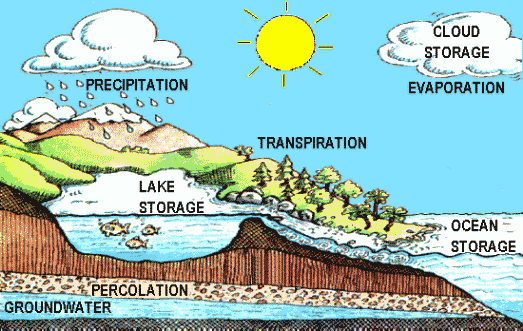
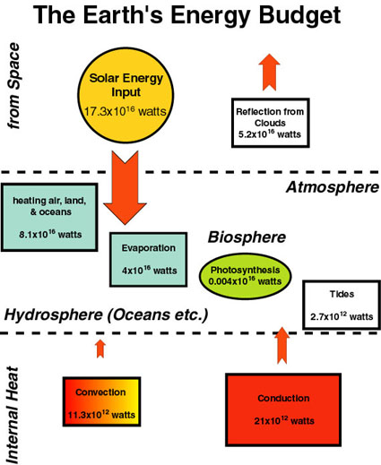
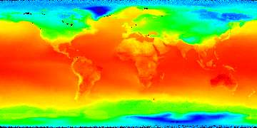
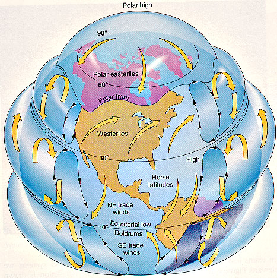
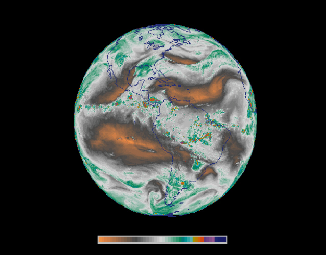
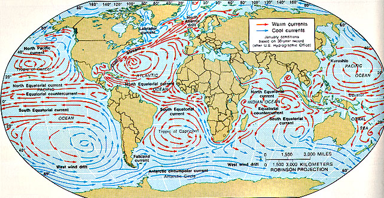
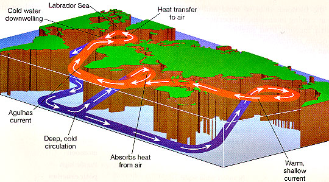
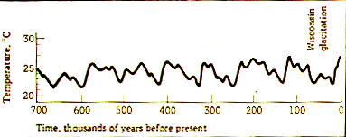

The Earth is an interacting system of matter and energy, that as part of its functioning produces phenomena like volcanoes, glaciers, mountain ranges, oceans, and continents. The energy that keeps this system going is on one hand the internal heat (from radioactive decay) that drives plate tectonics, and on the other hand solar energy that maintains ocean and atmosphere circulation and helps to drive erosion. In the previous chapter we have discussed the internal processes (radiogenic heat production, mantle convection) that drive plate tectonics and crustal dynamics. Geologists call this complex of internal processes the Tectonic System. They refer to the complex of solar powered external processes (atmosphere and ocean circulation, erosion) as the Hydrologic System, because water and its properties are the key ingredient. THE HYDROLOGIC SYSTEM includes the entire cycle (hydrologic cycle) of water movement on the Earth (be it on the surface or in the air). The driving force behind this cycle is the energy input from the sun.  THE HYDROLOGIC CYCLE as shown in above diagram shows the various pathways of (1) water to the oceans (rivers, glaciers, precipitation); (2) water into the atmosphere by evaporation (from falling rain, rivers & lakes, soil, the oceans, transpiration by plants); and (3) onto the landmasses (by rain, snow). Water movement/transport occurs through movement of clouds, by rivers, ocean circulation, groundwater flow, and evaporation. The bulk of the water is contained in the oceans, which contain about 30000 times more water than atmosphere and continents combined, cover approximately 70% of the Earth's surface and are on average 3800 m deep. The remainder of the water is found in ice caps & glaciers (3%), groundwater (1%), and rivers and lakes (0.01%). The latter two reservoirs constitute the terrestrial fresh water supply. Thus, only a very small fraction of the overall water supply is suitable and available for human use. The water transfer between these reservoirs is accomplished by the processes of evaporation, transpiration, precipitation, and flow of water (following gravity). Two minor reservoirs by size, the atmosphere (0.001%) and the biosphere (the totality of living tissue; 0.0001%) play a role that is not reflected by their size. As we shall see below, cycling of water through the atmosphere is an important factor for energy transfer in the atmosphere, and in Chapters 7 through 11 we will look at the important role that organisms play in driving the evolution of the climate and atmosphere evolution through the production and consumption of the greenhouse gases carbon dioxide and methane. Every year about 30000 to 40000 cubic kilometers (a cube 30-35 km in size) of water move across the surface of the continents to the oceans, profoundly shaping the surface of the continents. Evaporation by the sun effects lifting of water into the atmosphere, and the counterforce to this process is gravity that forces rain to fall back on the earth and causes water move back to the oceans in streams (river systems), on the way eroding soils, cutting canyons, and transporting solids (silt, sand, clay) and dissolved salts to the oceans. The transfer of water vapor from the oceans to the atmosphere goes hand in hand with the transfer of tremendous amounts of thermal energy to the atmosphere and is very important for atmospheric circulation (see below). For this reason atmospheric circulation and winds can be considered part of the hydrologic cycle. In cold climates water in the form of glaciers (glacial systems) moves downslope due to gravity, erodes bedrock by abrasive action, and transports sediment. Glaciers may either enter the sea directly, or melt at the end and add their water to the continental surface runoff. Water may also seep into the porous portions of the earth's surface and is then called groundwater (groundwater systems). It may dissolve rocks in the subsurface and create karst systems (caves in limestone) and sinkholes. Along the shores of oceans (shoreline systems) water that is agitated by waves (wind, atmospheric circulation) erodes and moves sediment and forms beaches, sandbars, lagoons, and related coastal features. Winds (eolian system) can carry considerable amounts of sand and dust and can profoundly shape landscapes (sand seas of deserts) as well as human destiny (the highly fertile loess plains of southern China, without them it would be much more difficult to feed a population of 1 billion people). Thus, the hydrologic cycle affects a broad range of landscape-shaping dynamic systems. We therefore consider river systems, glacial systems, groundwater systems, shoreline systems, and eolian systems as subsystems of the hydrologic system. In terms of overall importance for the shaping of the Earth surface, river systems are the primary force. Glaciers, although very powerful in modifying the land surface, were only abundant for brief intervals in Earth history. Both, the tectonic and the hydrologic system, are characterized by ongoing transfers of energy and matter. The forms of energy that are most important in geologic processes are: Kinetic Energy (meteorite impact, movement of wind and water, ocean currents) Gravitational Potential Energy (falling rain gains kinetic energy from its gravitational potential, water flowing down from mountains) Thermal Energy (input from the sun, radioactive decay, molten rocks). Transmitted by conduction, convection, radiation Chemical Energy (holds together atoms in molecules, the energy of the chemical bond) Nuclear Energy (released during radioactive decay) All those various forms of energy occur and are transformed into each other as geologic processes proceed (kinetic energy to heat during meteorite impact; thermal energy to chemical energy and vice versa during melting and recrystallization; thermal energy into gravitational potential energy [sun evaporates water and forms clouds] - gravitational potential energy into kinetic energy [rain drops fall]).  The total amount of energy that moves through the system is huge. It is on the order of 174 ,000 terawatts (1 terawatt = 1012 watts [energy per time]; 1 horsepower = 746 watts). Almost all of this energy comes to us via solar radiation. The Earth system receives 5000 times more energy from the sun than from the interior of the planet. Thus, although its manifestations are impressive (mountain ranges, earthquakes, volcanoes), the internal energy that keeps up mantle convection and drives the tectonic plates is only a small fraction of the energy that moves through the system. To put it into perspective, the total energy production by humans is about 9.6 terawatts at any given time. Thus, there is plenty of energy in the system. Even if humans were to extract all their energy needs from the solar input, there would still be plenty of energy left to keep the planet going. Solar energy input dominates the surface processes (wind, weather, climate, ocean circulation, etc.) of the Earth, and because the Earth is a sphere, its input is not uniform across the planet. The concentration of solar energy per unit area depends on the angle at which the solar radiation arrives. In equatorial regions, where the sun's rays come in more or less perpendicular, a maximum amount of heat is received. In polar regions, on the other hand, the sun's rays come in slanted at a shallow angle and considerably less heat is received (see diagram below).  Average Earth surface temperatures. Blue indicates lowest temperatures (polar regions), red indicates highest temperatures (around the equator). The data used for this diagram were collected between January 1985 and December 1992. As a consequence, the polar regions stay cooler. Just like in our hot water pot that was heated from below, the uneven global heat distribution gives rise to convection currents that attempt to equalize the heat distribution. In its most simple form we can imagine that heated air at the equator rises up, and spreads north and south towards the poles. It gradually cools, sinks down in the polar regions, and then flows across the Earth surface to the equator. There it heats up again and the convective cycle is repeated. This is what would happen if the Earth did not rotate. Rotation adds another twist to the story, because the Coriolis Effect makes the northward flowing currents veer off course (to the right, in the direction of rotation). The Coriolis Effect breaks the air exchange between equator and poles into three circulation belts. We have seen this effect also in the atmospheres of large gas planets in Chapter 2.  An idealized view of global air circulation. Along the equator, surface winds converge, bringing with them abundant moisture. Thus, clouds are abundant in this area and it rains a lot. Between 20 and 35 degrees latitude, descending dry and warm air masses give rise to cloudless skies and desert climates. Along the polar front, rising air masses again give rise to cloud formation and rain. An important aspect of global air circulation is the movement of water through the atmosphere. Water has a much higher heat capacity than the atmospheric gases. Its heat capacity is approximately four times that of air (heat capacity of water = 1 cal/gm/deg). In addition, because water changes from the liquid to the gas state (evaporation of water) and back (condensation into clouds) as it gets cycled through the atmosphere, we also have to consider the latent heat of vaporization (540 cal/gm). This is the amount of heat necessary to get the water molecules into the gas state. For example, if we evaporate a liter (1 kg) of water, 540,000 calories of latent heat are stored in the vapor. Once the water condenses, this latent heat is released, and heats up the surrounding air. If we assume for example that this water vapor is contained in 1000 kg of air (roughly 1000 cubic meters, or a cube of 10 meters size), it would heat up this air mass by about two degrees as it condenses. Air at 30 degrees C (86 degrees F) can hold up to 30 grams of water vapor per cubic meter (or kilogram) of air. If this water vapor condenses it releases 16,200 calories of latent heat. This in turn can cause the air to heat up as much as 64 degrees C. It is just like heating the air up in a hot air balloon. The air will expand and rise (think of rising and billowing clouds before a thunderstorm). For these reasons, condensing or vaporizing water has a profound effect on atmospheric circulation, and moist air masses are prone to very powerful climatic disturbances (e.g. thunderstorms, tornadoes, hurricanes). Water vapor is constantly cycling through the atmosphere, evaporating from the surface, condensing to form clouds blown by the winds, and subsequently returning to the Earth as precipitation. Heat from the Sun is used to evaporate water, and this heat is put into the air when the water condenses into clouds and precipitates. This evaporation-condensation cycle is an important mechanism for transferring heat energy from the Earth's surface to its atmosphere and in moving heat around the Earth.  This image shows global humidity patterns (April 27, 1995, at 1745 UTC, measured by the GOES 8 satellite). The areas with the lowest humidity (brownish) are those that have the weakest circulation and were feared by sailors because of a lack of sustained winds. Water also has a substantially higher heat capacity than rocks (by a factor of five), and therefore the oceans can store much more heat than the land surfaces of the planet. Because the oceans also cover about 70% of the Earth surface and are on average 3.8 km deep, they are the major heatsink of the planet and serve as temperature buffers for the ocean/atmosphere system. The bulk of the thermal energy at the Earth surface is stored in the oceans. The large thermal inertia of the oceans is a key factor in stabilizing Earth's climate. Because the oceans are of course also heated more intensely in the equatorial regions, there is abundant warm water near the equator, and cold water in the polar regions. The atmospheric circulation that is set up between the equator and the poles also influences the redistribution of these water masses. Wind blowing over the ocean surface exerts drag (friction) and starts to move the surface waters. In addition the currents are influenced by the Coriolis Force and the tides. A general pattern of ocean current is shown in the map below.  The currents are also influenced by the position of landmasses. Whereas in the Pacific we have currents that more or less correspond to the patterns of the surface winds, current patterns look more complex in the Indian Ocean and the Atlantic. In the North Atlantic, the Gulfstream moves warm equatorial surface waters northward, and a return current of cold arctic water moves southward across the Atlantic seafloor. Decades of research on ocean currents have revealed that there is a large scale oceanic circulation system. The Gulfstream that moves into the North Atlantic finally sinks as it cools and returns south across the Atlantic seafloor, flows as a bottom current into the South Atlantic, and then rises to the surface again in the Indian Ocean and the Eastern Pacific, only to warm up (absorbing heat from overlying air masses) and turn west to feed back into the Gulfstream. Actually, the sinking of the Gulf Stream is not so much a consequence of cooling and density increase, but one of salinity. Equatorial surface waters are more saline (high evaporation), and the waters of the North Atlantic are less saline (because they mix with meltwater [low salinity] from icebergs and from the Greenland ice cap). Thus, once the Gulfstream cools sufficiently it is heavier that the lower salinity North Atlantic seawater and sinks. A complete run through this current system is estimated to take about 1000 years.  At the moment this current system appears very stable, but comparatively minor changes may upset the delicate balance of temperature differences and prevailing winds. For example, scientists have speculated that melting of the Greenland icecap could introduce so much meltwater (of low salinity and low density) to the North Atlantic that the Gulfstream is prevented from sinking and returning as a southward flowing bottom current. This would interrupt the current system and cause equatorial waters (and regions) to get warmer, and northern Europe to get colder. Spock says.... Atmospheric and oceanic circulation are closely coupled. For example, changes in the pattern of sea surface temperatures are reflected in changes of wind patterns around the globe (water masses transfer or absorb heat to/from overlying air). Specific examples for this kind of interaction are weather phenomena knows as El Nino and La Nina (these will be discussed later). On the modern Earth, the Tectonic System, the Hydrologic System (atmosphere & hydrosphere), and organic life (biosphere) interact in complex ways, and matter and energy is exchanged between these subsystems. The net result of all these interactions, when averaged over periods of decades to centuries, is the Earth System's overall "condition", a state of dynamic equilibrium. The global climate is a major expression of this "condition". CLIMATE At its simplest, climate is a reflection of local, regional, and global distributions of temperature and precipitation -- in turn determined by the latitudinal distribution of the energy received from the Sun, the absorption and transport of that energy within the Earth System, and its re-emission to space. Although circulation of air masses and ocean waters (as outlined above) plays a significant role in determining global heat exchange and average world temperatures, there are several other, more fundamental, controls on climate. The basic items that determine Earth climate are: Astronomical Parameters Distribution of Continents and Oceans The Greenhouse Effect Item 2 (Distribution of Continents and Oceans) is most important because it determines the routing of global current systems and therefore the intensity/strength of the oceanic heat exchange between equatorial and polar regions. The movement of the continents across Earth's surface modulates the global climate on very long time scales by changing wind patterns, ocean currents, and the ease with which ice can accumulate. Under some configurations of continents and oceans the heat exchange may be severely impeded, leading to hot tropics and ice covered polar regions. Also, when we have all the landmasses bunched up in the polar regions the warm ocean current may not get far enough north and we end up with glaciated continents. Conversely, when we have all the continents hanging around the equator, the polar regions have very good oceanic heat exchange and world temperatures would be more uniform. Item 3 (Greenhouse Effect) will be discussed at some length later in this lecture. Basically, this is where linkage to the biosphere comes in. Item 1 (Astronomical Parameters), will be surveyed now, because we have already set the stage by going over the origin of the solar system. Earth's rapid rotation about its axis (compared to the time for one orbit around the Sun) determines day and night, spreads the incoming solar radiation more or less uniformly around circles of latitude, and strongly affects circulation patterns in the oceans and atmosphere. The eccentricity of Earth's orbit modulates the intensity of the incoming solar radiation through the course of the year. The tilt of Earth's axis with respect to the ecliptic plane results in the seasons. Note, that it is summer in the northern hemisphere when the Earth is closest to the sun (perihelion, January 3rd, 147 million km), and winter when it is farthest away (aphelion, July 4th, 152 million km). Thus, the tilting of the northern hemisphere towards the sun in summer (longer days, more solar energy input) and the tilting away from the sun in the winter (shorter days, less solar energy input) are more important than the actual distance to the sun. The relationship between the eccentricity of Earth's orbit and the orientation (tilt) of the planet's axis of rotation vary systematically over time. This causes cyclic shifts of solar energy input that can produce climate modulations (repetitive temperature variations). These variations are termed Milankovitch cycles in honor of Serbian astrophysicist and mathematician Milutin Milankovitch who in 1920 figured out these variations and proposed that they influence world climate.  This image shows a tracing of ocean surface temperatures for the past 700,000 years, based on oxygen isotopes of marine microfossils. We see a very clear periodicity of ca. 100,000 years (the eccentricity cycle of Milankovitch), and a superimposed periodicity of ca. 20,000 years (the precession cycle of Milankovitch). Fluctuations in the Sun's output (apparently with a period of 500 to 1000 years) may produce small changes in climate over intervals of 100 to 200 years. A time interval of cooler temperatures that ranged from the mid-14th to the mid-19th century, also known as the "Little Ice Age", may have been caused this way, but this is a tentative interpretation. The Little Ice Age brought an end to an unusually warm era known as the Medieval climate optimum, and brought bitterly cold winters to many parts of the world. It is most thoroughly documented in Europe and North America. In the mid-17th century, glaciers in the Swiss Alps advanced, gradually engulfing farms and crushing entire villages. The River Thames and the canals and rivers of the Netherlands often froze over during the winter, and people skated and even held fairs on the ice. In the winter of 1780, New York Harbor froze, allowing people to walk from Manhattan to Staten Island. Sea ice surrounding Iceland extended for miles in every direction, closing that island nation's harbors to shipping. The severe winters affected human life in ways large and small. Famines became more frequent (the one in 1315 killing 1.5 million people alone), and deaths from disease increased. The population of Iceland fell by half, and the Viking colonies in Greenland died out. The Little Ice Age can be seen in the art of the time; for example, snow dominates many village-scapes by the Flemish painter Pieter Brueghel the Younger, who lived from 1564 to 1638. |